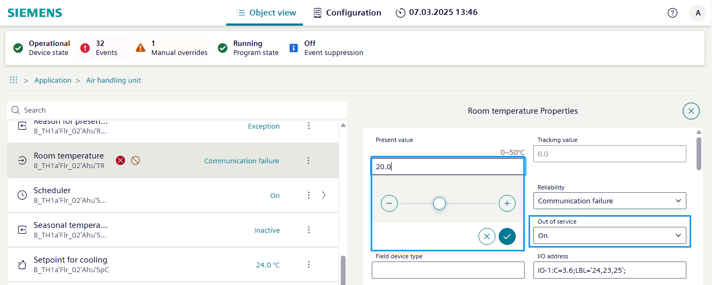

Setting the analog input value to a specific value (sensor broken)
If a sensor is defective, you can temporarily define a replacement value. This allows control to continue with the defined replacement value.
Identify the sensor:
- Determine the type of sensor that is broken (for example, temperature sensor, pressure sensor, flow sensor).
- Locate the specific sensor in the system or equipment.
- Go to the Object view tab.
- Select Application.
- Select [Plant name] > [Object name].
Note: The broken data point can be located on different hierarchy levels and is marked with and a fault messageCommunication failure. - Select .
- The Object properties dialog area opens.
- In the Out of service drop-down list, select On.
- Select to send the command.
- The Out of service symbol appears in the object list.
- Select the Present value text field and enter an appropriate value, for example, room temperature = 21°C.
- Select to send the command.

Working on the damaged sensor
- Inspect the sensor.
- Visually inspect the sensor for any physical damage, such as cracks, corrosion, or loose connections.
- Check the wiring of the sensor for any breaks, shorts, or signs of damage.
- Test the sensor.
- Use a multimeter or appropriate testing equipment to check the functionality of the sensor.
- Measure the output signal or resistance of the sensor to verify if it is within the expected range.
- Compare the performance of the sensor to the Siemens specifications.
- Replace the sensor (if necessary).
- If the sensor is found to be faulty, you will need to replace it with a new, compatible sensor.
- Ensure that the replacement sensor has the same specifications and mounting requirements as the original.
- Install the new sensor.
- Carefully install the new sensor, following the Siemens instructions for proper mounting and connecting.
- Reconnect the sensor to the system or equipment, ensuring all electrical and mechanical connections are secure.
- Configure the system.
- Update the configuration of the system or equipment to recognize the new sensor.
- Calibrate the sensor, if necessary, to ensure accurate readings.
- Test the system.
- Power on the system or equipment and verify that the new sensor is functioning correctly.
- Check the readings of the sensor and ensure they are within the expected range.
- Perform any necessary system checks or tests to ensure the overall system is operating as expected.
- Document the repair.
- Document the steps taken to identify and fix the broken sensor.
- Record the sensor model, serial number, and any other relevant information.
- Keep the documentation for future reference and maintenance purposes.
- Final work in the Web interface.
- Once the sensor has been replaced and tested, set the Out of service value to On.
- Load the current parameters back into ABT Site.